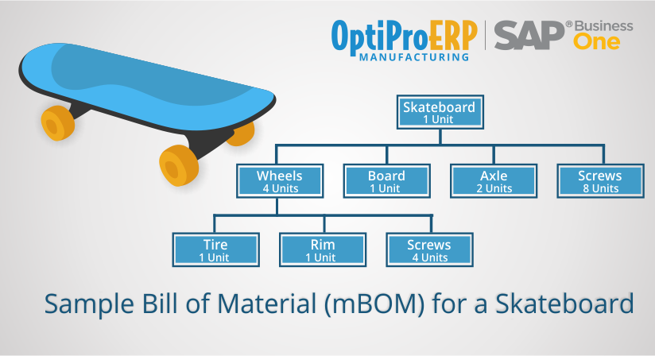

[Vayetek] Technical Test
You can do the search you want but provide your own solution.
There is not a correct or a wrong solution
Feel free to ask me if you have any question: abbes.yassine@outlook.fr
Arrays And Strings
Question
Assume you have a method isSubstring which checks if one word is a substring of another.
Given two strings, s1 and s2, write code to check if s2 is a rotation of s1 using only one call to isSubstring
(i.e., “waterbottle” is a rotation of “erbottlewat”).
Objected Oriented Design
Question 1
Imagine you have a call center with three levels of employees: fresher, technical lead (TL), product manager (PM).
There can be multiple employees, but only one TL or PM.
An incoming telephone call must be allocated to a fresher who is free.
If a fresher can’t handle the call, he or she must escalate the call to technical lead.
If the TL is not free or not able to handle it, then the call should be escalated to PM.
-
Design the classes and data structures for this problem.
-
Implement a method getCallHandler() to return the employee who get the call
Question 2
Imagine you have an example of product:

- Design the classes and data structures to support this kind of product
Note that the "Skateboard" is just an example of product instance.
You need to design the classes with UML to support this type of product.
- Implement a method getProduct()
hint: You need to do a recursive function to retrieve this product hierarchy.
Info
Question 2 is a mandatory question to pass to the next phase.
Sorting and Searching
Question
Given a sorted array of n integers that has been rotated an unknown number of times, give an O(log n) algorithm that finds an element in the array.
You may assume that the array was originally sorted in increasing order.
EXAMPLE:
Input: find 5 in array (15 16 19 20 25 1 3 4 5 7 10 14)
Output: 8 (the index of 5 in the array)
Databases
Question
Imagine a simple database storing information for students’ grades.
Design what this database might look like, and provide a SQL query to return a list of the honor roll students (top 10%), sorted by their grade point average.
Info
- You can choose the language you prefer (JAVA,C++,C#...)
- Provide solution with any method (git (code + readme) , word ...)